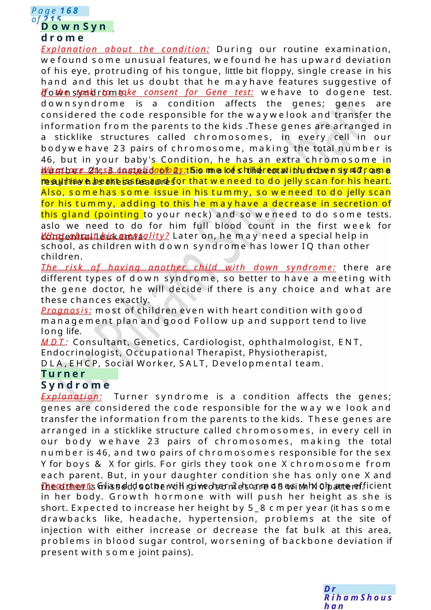
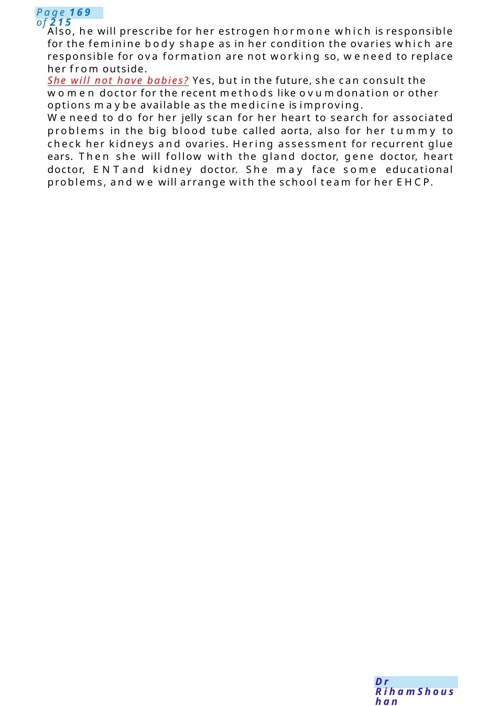

Down Syndrome
Explanation about the condition: During our routine examination, wefound some unusual features, wefound he has upward deviation of his eye, protruding of his tongue, little bit floppy, single crease in his hand and this let us doubt that he mayhave features suggestive of downsyndrome. If the task to take consent for Gene test: wehave to dogene test. downsyndrome is a condition affects the genes; genes are considered the code responsible for the waywelook and transfer the information from the parents to the kids .These genes are arranged in a sticklike structures called chromosomes, in every cell in our bodywehave…
Scenario Summary
Explanation about the condition: During our routine examination, wefound some unusual features, wefound he has upward deviation of his eye, protruding of his tongue, little bit floppy, single crease in his hand and this let us doubt that he mayhave features suggestive of downsyndrome. If the task to take consent for Gene test: wehave to dogene test. downsyndrome is a condition affects the genes; genes are considered the code responsible for the waywelook and transfer the information from the parents to the kids .These genes are arranged in a sticklike structures called chromosomes, in every cell in our bodywehave…
Full Original Scenario

Down Syndrome
Turner Syndrome
Explanation about the condition: During our routine examination, wefound some unusual features, wefound he has upward deviation of his eye, protruding of his tongue, little bit floppy, single crease in his hand and this let us doubt that he mayhave features suggestive of downsyndrome.
If the task to take consent for Gene test: wehave to dogene test. downsyndrome is a condition affects the genes; genes are considered the code responsible for the waywelook and transfer the information from the parents to the kids .These genes are arranged in a sticklike structures called chromosomes, in every cell in our bodywehave 23 pairs of chromosome, making the total number is 46, but in your baby's Condition, he has an extra chromosome in number 21, 3 instead of 2, this makes the total number is 47, as a result he has these features .
What are these complications: Some of children with downsyndrome mayhave heart issue and for that weneed to do jelly scan for his heart. Also, somehas some issue in his tummy, so weneed to do jelly scan for his tummy, adding to this he mayhave a decrease in secretion of this gland (pointing to your neck) and so weneed to do some tests. aslo we need to do for him full blood count in the first week for congenital leukemia.
What about his mentality? Later on, he may need a special help in school, as children with down syndrome has lower IQ than other children.
The risk of having another child with down syndrome: there are different types of down syndrome, so better to have a meeting with the gene doctor, he will decide if there is any choice and what are these chances exactly.
Prognosis: most of children even with heart condition with good management plan and good Follow up and support tend to live long life.
MDT: Consultant, Genetics, Cardiologist, ophthalmologist, ENT, Endocrinologist, Occupational Therapist, Physiotherapist, DLA,EHCP, Social Worker, SALT, Developmental team.
Explanation: Turner syndrome is a condition affects the genes; genes are considered the code responsible for the way we look and transfer the information from the parents to the kids. These genes are arranged in a sticklike structure called chromosomes, in every cell in our body wehave 23 pairs of chromosomes, making the total number is 46, and two pairs of chromosomes responsible for the sex Yfor boys & Xfor girls. For girls they took one Xchromosome from each parent. But, in your daughter condition she has only one Xand the other is missed, so her chromosomes are 45 with X0pattern.
Treatment: Gland doctor will give her 2 hormones which are efficient in her body. Growth hormone with will push her height as she is short. Expected to increase her height by 5_8 cmper year (it has some drawbacks like, headache, hypertension, problems at the site of injection with either increase or decrease the fat bulk at this area, problems in blood sugar control, worsening of backbone deviation if present with some joint pains).

Also, he will prescribe for her estrogen hormone which is responsible for the feminine body shape as in her condition the ovaries which are responsible for ova formation are not working so, weneed to replace her from outside.
She will not have babies? Yes, but in the future, she can consult the women doctor for the recent methods like ovumdonation or other options maybe available as the medicine is improving.
Weneed to do for her jelly scan for her heart to search for associated problems in the big blood tube called aorta, also for her tummy to check her kidneys and ovaries. Hering assessment for recurrent glue ears. Then she will follow with the gland doctor, gene doctor, heart doctor, ENTand kidney doctor. She may face some educational problems, and we will arrange with the school team for her EHCP.

Basal Skull Fracture
MRCPCH Mock Communication Script: Missed Basal Skull Fracture – Apology Scenario
⚕️ Candidate: “Hello, I’m Dr Ahmed, one of the senior pediatric doctors. Can I confirm I’mspeaking with [baby’s name]’s mother?”
Role Player: “Yes...”
Candidate:
“Thank you for coming in today. I understand you were here yesterday after your baby had a fall. Before westart, how is your baby today?”
Mother: “She seems okay...but whydid you call us back?”
Candidate: “I’d like to talk to you about the X-ray from yesterday, and I’m afraid I have some important information to share.”
Mother reacts: “What do you mean?”
Key Moment: Disclosure +Apology+ Incident report has been done +Quality Teamand Practice Manager are involved + double Check of the file with fluorescence Marker has been highlighted + Complaint Structure through PALS(Patient Advice and liaison service).
Candidate: “When the X-ray was reviewed again this morning by a senior specialist, wefound that your babyhas a fracture at the base of the skull.” “I amvery sorry that this wasnot identified yesterday before you went home.”
Mother (emotional):“What? Howcould you miss something like that? You told meeverything was fine!”.